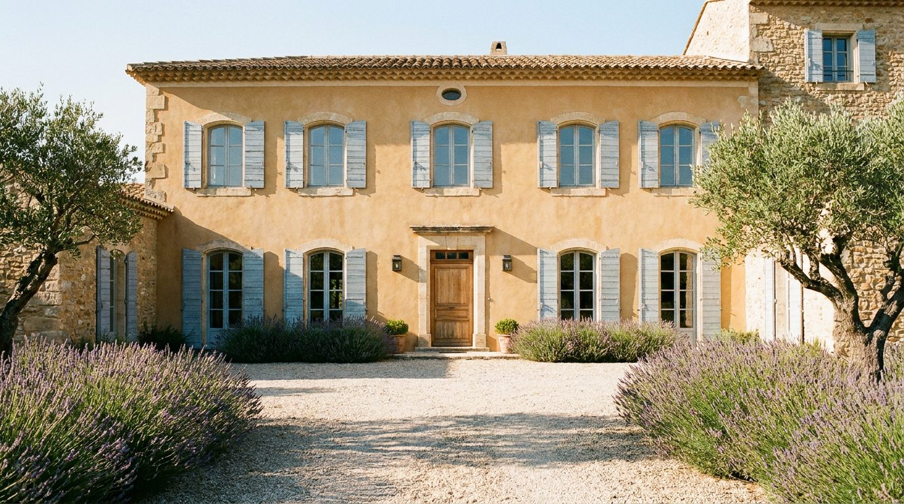
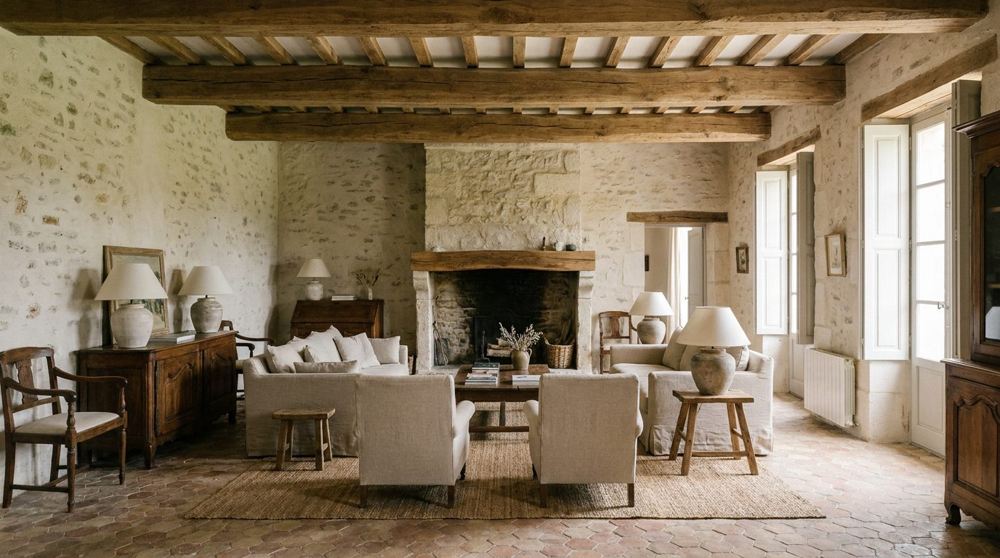

Atlante · FR-12 · Francia · Provincia
Bastide provenzale
Esempi · esterno e interno


Perché funziona
variante solare e ordinata del rustico: simmetria, calce, colori lavanda/oliva. Ottima per cataloghi outdoor-indoor.
Architettura · elementi riproducibili
- Facciata simmetrica, persiane in legno, pavimento in tommettes esagonali
- Travi a vista, camini in pietra, nicchie e stipiti in calce
- HSP 3,0–3,5 m; porte-finestre verso il giardino
- Cucina con credenza in legno, ceramiche di Salernes, rame
Luce
sole filtrato dalle persiane, strisce di luce sul pavimento; 5600–6000 K; ambienti chiari e uniformi.
Prompt di generazione (EN)
Provençal bastide interior near Aix-en-Provence, lime-plastered walls in warm cream, exposed beams, hexagonal terracotta tommettes, stone fireplace, long oak table, rattan chairs, olive branches in a ceramic jug, open French doors onto a garden. Sunlight filtered through wooden shutters casting striped light on the floor, 5800 K, airy and even, soft shadows. 35 mm lens, f/5.6, camera at 1.4 m, centered composition toward the doors, no people, 3:2.
Errori tipici da controllareProvenza da catalogo americano (lavanda ovunque, girasoli); pietra troppo bianca; persiane blu oltremare da Grecia.
Riferimenti reali
- Bastide du Jas de Bouffan, Aix-en-Provence apri ↗